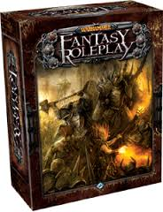
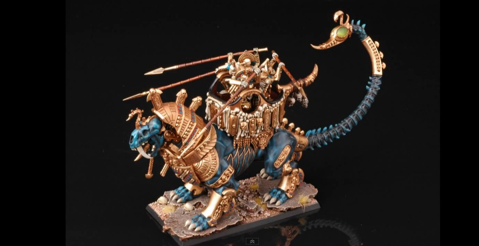

PRODUCTS
Games

Warhammer is a tabletop wargame where two or more players compete against each other with "armies" of 25 mm - 250 mm tall heroic miniatures.
The rules of the game have been published in a series of books, which describe how to move miniatures around the game surface and simulate combat in a "balanced and fair" manner.
The game is designed for regiments of fantasy miniatures.
Warhammer Fantasy Roleplay (abbreviated to WFRP or WHFRP) is a role-playing game set in the Warhammer Fantasy setting.
The primary setting of WFRP is the Empire, a region of the Old World based loosely on the Holy Roman Empire.


Copyright by KUBA ©